⛏Lake City
A Victorian silver town at the foot of the Alpine Loop. Leave the truck and trailer here. The town's darkest story: in 1874 Alferd Packer came out of these mountains alone in winter, and five men didn't.
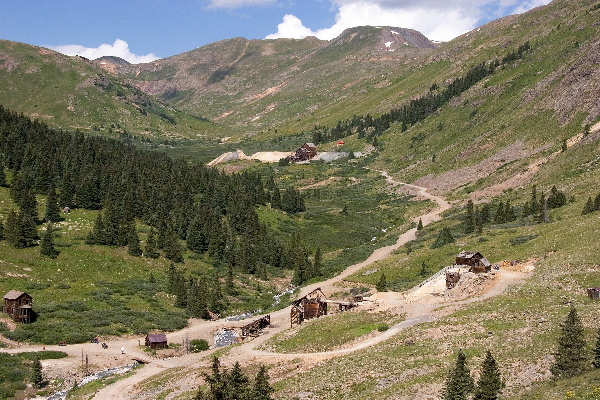
3 riding days · tow to Lake City · 2 nights in Telluride
The high San Juans: ghost towns above timberline, the Million Dollar Highway, and two nights in a box canyon.
Why ride it
This is the San Juan Mountains at full volume. Day one climbs over Engineer Pass at 12,800 ft to the ghost town of Animas Forks, drops into Silverton as the steam train pulls in, then rides the Million Dollar Highway to Ouray and the Last Dollar Road into Telluride. Day two loops south past Lizard Head to Dolores and the Ancestral Puebloan country, with a high lake on the way home. Day three heads back east over Owl Creek Pass, where True Grit was filmed, and across the Alpine Plateau to Lake City and the trailer. The days are short on purpose: there's too much to stop for.
The whole trip
Scroll or pinch to zoom; roads and their names appear as you zoom in. Day 1 in orange, day 2 in raspberry, day 3 in navy. Maps: © OpenStreetMap contributors, SRTM | style © OpenTopoMap (CC-BY-SA); relief and rivers: USGS The National Map.
Day 1
105 mi · about 3½ h of riding · half of it dirt
Lake City to Silverton · 35 mi
A Victorian silver town at the foot of the Alpine Loop. Leave the truck and trailer here. The town's darkest story: in 1874 Alferd Packer came out of these mountains alone in winter, and five men didn't.
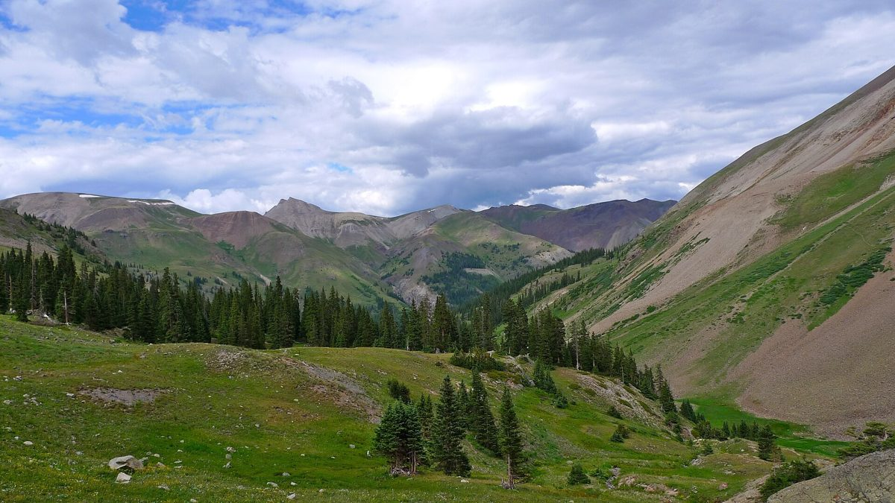
A rocky shelf road up Henson Creek to 12,800 ft, far above timberline, with peaks on every side. Oh Point, just below the top, is the place for the photo.
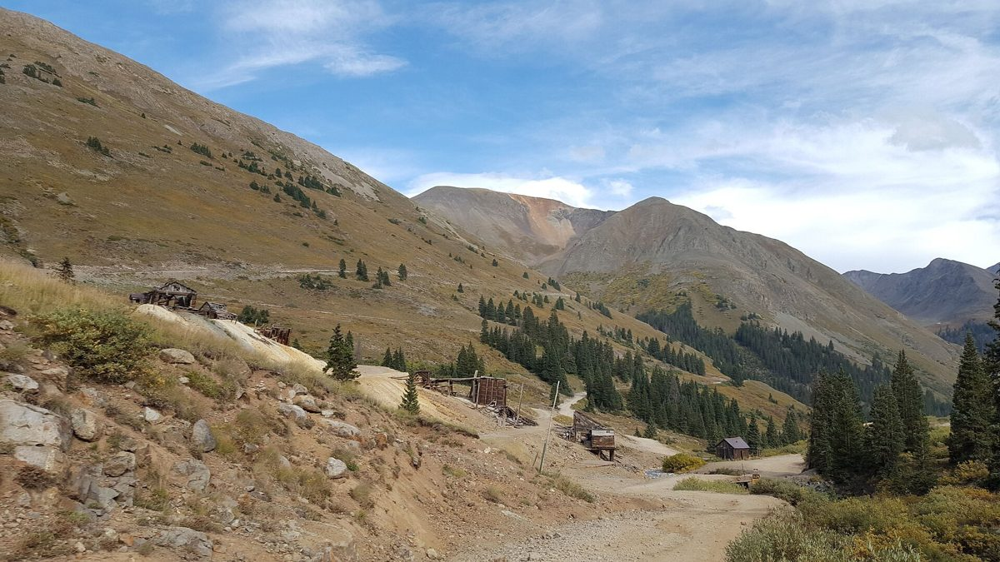
A ghost town at 11,200 ft where three forks of the Animas River meet: weathered houses, the Duncan House with its bay window, and old mills. You can walk right in.
Down the Animas past the ghost town of Eureka and the huge stepped ruins of the Sunnyside Mill. A few miles here are the roughest of the trip: rocky, steep, slow and fun.
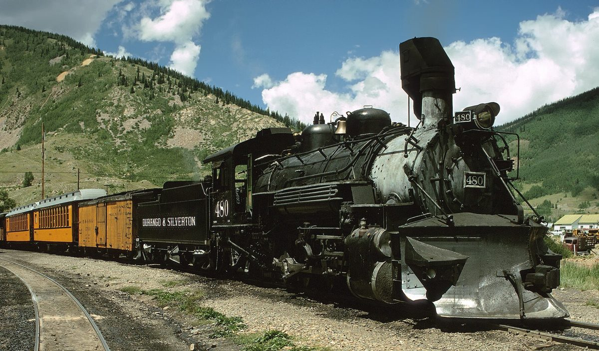
A mining town at 9,300 ft with dirt side streets and old saloons on Blair Street. Time lunch for the Durango & Silverton steam train, which pulls in late morning and blows its whistle down the main street.
Silverton to Telluride · 70 mi
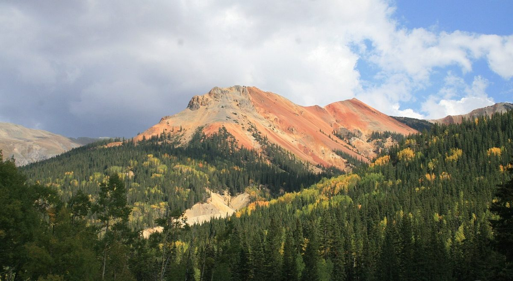
US 550 climbs past the rust-red Red Mountains to 11,018 ft, then drops into the Uncompahgre Gorge on ledges with no guardrails. Bear Creek Falls is right beside the road.
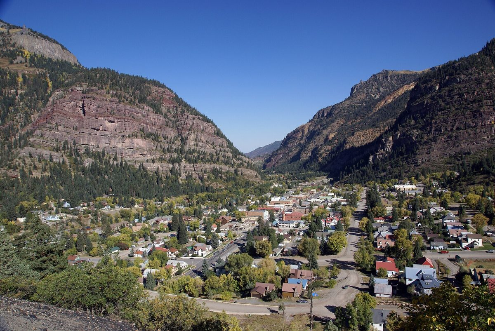
The Switzerland of America: a little Victorian town boxed in by cliffs, with a big hot springs pool at the north end of town.
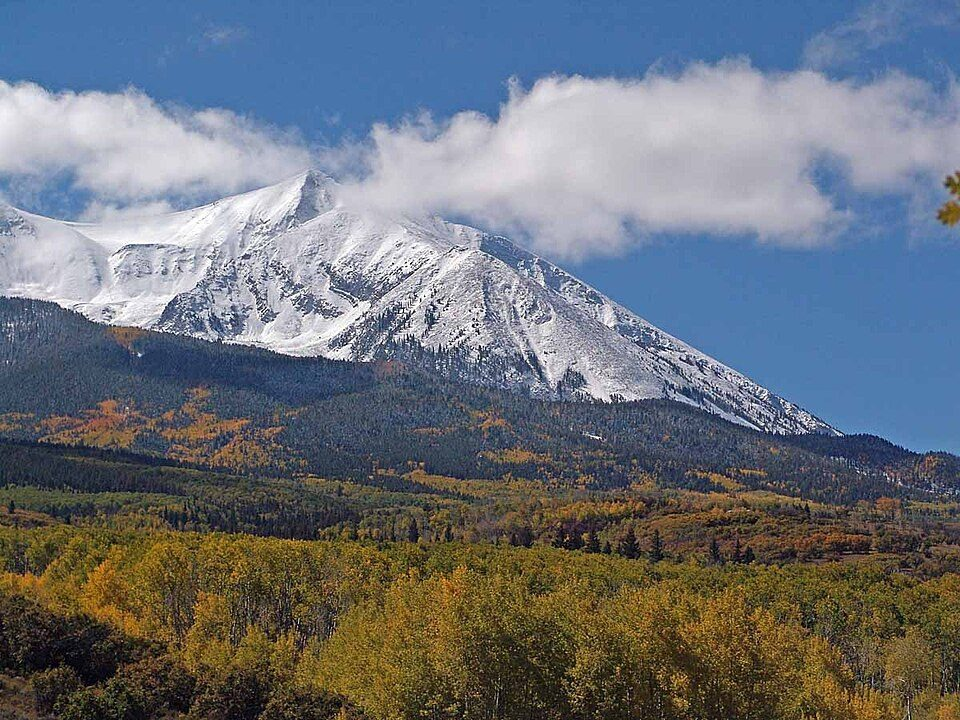
Ridgway's town square was in True Grit (1969). Then the Dallas Divide, where the Sneffels Range fills the view: one of the most photographed scenes in Colorado.
The back way into Telluride: a dirt road through ranches and big aspen groves with Mount Sneffels behind you. In late September it's pure gold.
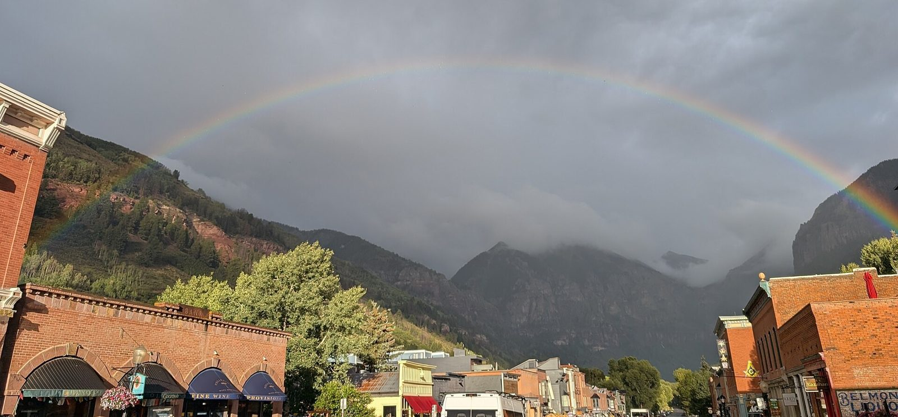
Tonight
A mining town turned ski town in a deep box canyon, with Bridal Veil Falls, Colorado's tallest free-falling waterfall, at the end of the street. Butch Cassidy robbed his first bank here in 1889. Ride the free gondola up to Mountain Village for the view, then come back down for dinner on Colorado Avenue.
Day 2
145 mi · about 4 h · a third dirt
Telluride to Dolores · 65 mi
Just below Ophir sits the Ames plant, where in 1891 alternating current was first used to power a mine. Ames Falls tumbles right beside the road.
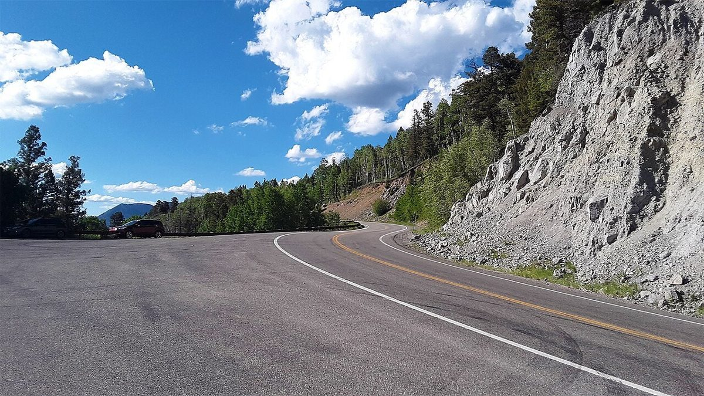
A wide meadow pass at 10,222 ft under the Lizard Head, a crumbling rock spire, with Trout Lake below.
A quiet old mining town on the Dolores River. Coffee, fuel, and the feeling that it's still 1890.
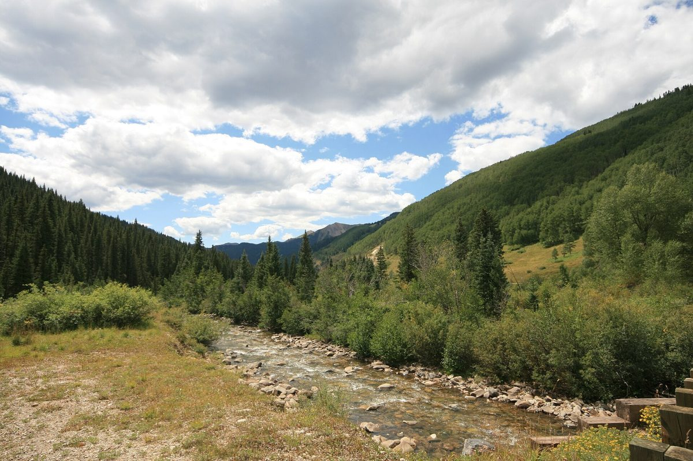
CO 145 follows the Dolores River down a long red-rock and pine canyon. Easy, sweeping miles beside the water.
Lunch in a small river town. The Galloping Goose, a homemade railcar from the old Rio Grande Southern, sits in town.
The Anasazi Heritage Center: the region's Ancestral Puebloan museum, with a short walk up to the Escalante Pueblo ruin on a hilltop.
Dolores to Telluride · 80 mi
Forest roads climb north to a high, lonely lake with a little campground store.
Back roads across high meadows and aspen, then down Fall Creek to the San Miguel and Telluride.
Day 3
137 mi · about 4¼ h · more than half dirt
Telluride to Ridgway · 45 mi
Down the San Miguel canyon and back over the Dallas Divide, the Sneffels Range in the mirrors this time.
Lunch is early on purpose: Ridgway is the last town before 90 miles of dirt.
Ridgway to Lake City · 92 mi
A gravel pass at 10,114 ft beneath Chimney Rock and Courthouse Mountain. John Wayne rode through these meadows in True Grit. Silver Jack Reservoir waits on the far side.
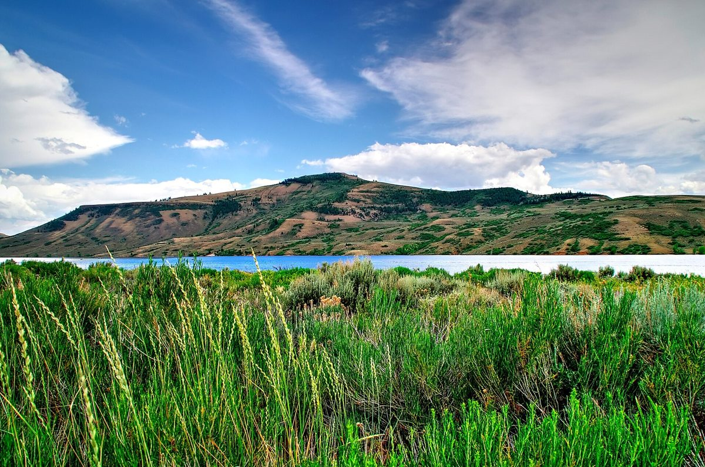
A few miles of US 50 above the Gunnison River's canyon reservoirs.
A long dirt road across a high, open plateau with the whole San Juan skyline to the south, then down to the Lake Fork and Lake City.
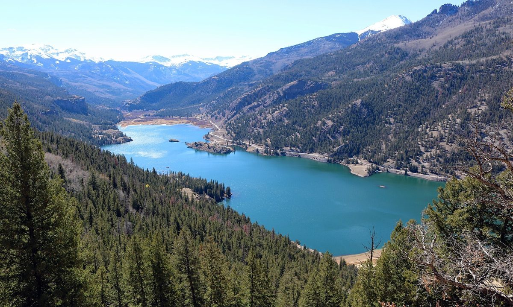
Colorado's second-largest natural lake, dammed by an ancient earthflow, the Slumgullion. A fine last look before loading the bikes.